원하는 것을 말하면 플로로 초안. 채팅에서 맞는지 봅니다.
Floe
얼음 위 작업실에서, 플로로와 함께.
AI에게 코드를 맡기는 사람이 끝까지 만들고, 이해하고, 배움을 쌓도록 곁에서 길을 안내하는 데스크톱 앱
바이브 코딩은 결과물은 내 주지만, 지금 몇 단계인지 · 다음에 무엇을 할지 · 무엇을 정했는지는 세션이 쌓일수록 사라집니다. Floe는 그 빈자리를 채우는 쪽이 AI가 아니라 사람이도록 만듭니다.
11.1.0앱 버전 — 2026-11-04, 11/1 동결 판 11.0.0 뒤 고침 · Mac · Windows · 우분투
v61.3버전 기록 — 2026-11-03, PR마다 한 줄이 쌓인 것
11 / 8제출 마감 18:00 — 코디세이 AI 네이티브 Final-Project
11 / 12 · 13발표 10분 + 질의응답 10분
왜 만들었나
팀장이 학생으로서 겪은 문제에서 시작했지만, 이 문제는 학생에게만 있지 않습니다. 대상은 AI로 프로그램을 만드는 모든 사람입니다.
"AI가 일하는 시대에도,
성장하는 건 사람이어야 한다."기획안의 목표 한 문장 — 이재엽 확정, 2026-10-12
코드는 늘고, 이해는 비어 간다
AI 코딩 도구 덕분에 누구나 말로 서비스를 만들 수 있게 됐습니다. 그런데 코드를 생성하는 것과 프로젝트를 완성하고 돌아보며 실력을 키우는 것은 다른 문제입니다.
어디쯤인지 몰라 멈춘다
AI가 만든 결과가 맞는지, 지금 어느 단계이고 다음에 무엇을 해야 하는지 판단하지 못해 개발이 중간에 멈춥니다. 세션이 쌓일수록 결정은 흩어집니다.
끝내도 설명하지 못한다
끝까지 만들어도 내 코드를 설명하지 못하고, 배운 것이 다음 프로젝트로 이어지지 않습니다. 실력이 늘었는지 체감하기 어렵습니다.
약속 셋
시연 장면 다섯이 보여 줘야 하는 것은 이 셋뿐입니다(시연 한 줄기, 2026-11-01).
지금 어디고, 다음에 무엇을
1~8단계 중 지금 몇 단계인지, 이번 단계에서 어디까지 해야 하는지, 다음 할 일 한 줄을 늘 보입니다.
사용자가 느끼는 것 — 길을 잃지 않는다AI가 쓰고, 사람이 정하고, 이해하고 넘어간다
초안은 플로로가 내고 확정은 사람이 누릅니다. 관문에서 "이해하셨나요?"에 예라고 답하기 전에는 다음 단계로 가지 않습니다.
사용자가 느끼는 것 — 맡기되 내가 결정한다배움이 남는다
관문마다 배운 것 한 줄, 단계마다 한 장, 8단계에서 다음 프로젝트로 가져갈 것. 문서는 사용자의 GitHub 저장소에 쌓입니다.
사용자가 느끼는 것 — 끝나면 기록과 배운 것이 내 폴더에"단계마다 적은 배운 것과 결정 기록으로 초안을 1 ~ 3개 만들어요. 고쳐서 채택하거나 버려도 돼요 — 정하는 건 나예요."8단계 · 가져갈 것 — 앱 문구 그대로
"채택하면 다음 프로젝트부터 그 단계에서 보여요." "고른 것은 이 단계의 준비 계획에 근거로 들어가요."다음 프로젝트의 그 단계 · 지난 프로젝트에서 — 앱 문구 그대로
여덟 단계, 한 길
개인 프로젝트에서 쓰던 7단계 개발 방법론에 코딩마라톤 루틴(의도명세 → 요구 문장 → 계획 → 작업)을 합쳐 쉬운 말로 바꾼 길입니다. 얼음을 누르면 그 단계의 완료 기준과 앱의 연습 예시가 보입니다. 아래 글은 이 페이지가 앱의 규칙 파일을 직접 읽어 그린 것이라 앱과 같습니다.
무엇을 만들지 정하기
1단계 · 정하기
"용어: …"를 누르면 앱의 용어 풀이가 그대로 펼쳐집니다. 화면에는 쉬운 말만 크게, 전문 용어는 작게 붙습니다(FR-13 — 시험으로 강제).
관문을 넘으려면 — 완료 기준
단계마다 퀘스트 한 바퀴
어느 단계에 있든 같은 다섯 칸을 돌고 관문을 넘습니다. 아래는 3단계 "기능 정리"에서 ③ 기록을 하는 중인 모습입니다.
끝남① 생각
끝남② 행동
확정한 줄을 내 Claude Code에 맡깁니다. 다 되면 보고가 옵니다.
지금③ 기록
정한 줄 Ⅰ ~ Ⅴ. 완료 보고 뒤 한 장(생각 · 한 일 · 정한 것 · 배운 말 · 다음 할 일).
아직④ 저장
단계 문서 · 기획서 · 결정 기록이 내 GitHub 저장소에.
아직⑤ 버전
관문을 넘을 때마다 V.n. README 맨 앞 버전 기록에.
넘어가기 전관문
빈칸 · 증거 없는 칸은 안 됨. "이해하셨나요?"에 예라야 다음 장.
3분 시연 — 장면 다섯
11/1 기능 동결 뒤 제출까지는 이 장면만 봅니다. 연습 판(AI 호출 없음, 전송 0)으로 끝까지 돌아가고, 진짜 AI로는 녹화본을 재생합니다.
주요 기능 열
있는 기능은 81개입니다(2026-10-31 기능 전체 목록). 그중 사용자가 처음 2분 안에 만나는 것만 골랐습니다.
- 1~8단계 길 안내
정하기 → 적어 두기 → 기능 정리 → 방법 고르기 → 뼈대 → 만들기 → 재 보기 → 돌아보기. 지금 단계와 다음 할 일 한 줄을 늘 보입니다.
- 초안은 플로로, 확정은 나
원하는 것을 한 단락 말하면 1단계 초안이 오고, 2~8단계는 앞 단계 결과로 초안을 만듭니다. 4~8단계는 칸마다 예시 셋 중 고릅니다.
- 퀘스트 탭 하나
위에 여덟 장 지도, 아래에 지금 퀘스트 다섯 칸. 지금 줄만 펼쳐지고, 흐름 · 문서 상자 보기로 바꿀 수 있습니다.
- 관문
빈칸 · 증거 없는 칸은 안 됨. 넘기려면 채우거나 까닭을 적고, 까닭은 결정 기록에 남습니다. "이해하셨나요?"에 아니요면 헷갈린 곳을 고르고 한 장 요약을 받습니다.
- 계획 → 맡기기 → 보고
붙여 넣은 글로 계획을 세우고 줄마다 확정하면 내 Claude Code가 이어서 합니다. 기준마다 해냈는지 보고가 옵니다.
- 섬의 허락 카드
Claude Code가 파일을 고치거나 명령을 돌리기 전에 허락을 구하면 섬에 카드가 뜹니다. 답이 없으면 허용되지 않은 채 도구 자신의 확인으로 넘어갑니다.
- 문서를 내 GitHub에
관문을 지나면 단계 문서 · 기획서 · 결정 기록 · CLAUDE.md를 작업 폴더에 씁니다. 커밋 · 푸시는 허락을 받은 Claude Code가. 비밀값 모양은 쓰기 전에 가립니다.
- 파일을 작업실에서
파일 칸에서 누르면 열립니다. md는 보기 좋게, 코드는 줄 번호와 git과 다른 줄. 고쳐 저장하고 되돌리며, 문서 고치기는 틀로 맡깁니다.
- 배운 것을 다음 프로젝트로
관문마다 배운 것 한 줄, 단계마다 한 장, 8단계에서 가져갈 것을 골라 다음 프로젝트의 그 단계에서 다시 봅니다. 지식 창고(세컨드 브레인)로도 넣습니다.
- 플로로
표정 11가지 · 고개 돌리기 · 둥실 · 잠수 · 쓰다듬기. 섬을 접으면 가장자리의 알약 안에서 얼굴만 내밉니다. 움직임 줄이기를 켠 사람에게는 움직이지 않습니다.
어떻게 동작하나
앱 하나에 셋이 들어 있습니다 — 섬(플로로와 채팅) · 작업실(지도 · 퀘스트 · 책 · 파일) · 로컬 서버. 서버는 앱이 켤 때 같이 켜지고 이 컴퓨터 안에서만 듣습니다.
사용자원하는 것을 말하고, 칸마다 맞아요를 누르고, 관문에서 이해했다고 답합니다.
Electron 앱섬(
index.html)과 작업실(win.html)을 한 창에. 화면은 바닐라 JavaScript, 프레임워크 없음.server.js로컬 API 43개.
127.0.0.1:4317에서만 듣고, 요청마다 출처와 확인 값을 봅니다.navigator.js단계 · 관문 판정 규칙. 같은 입력이면 같은 답 — AI가 아닙니다.
provider.js외부 AI를 부르는 유일한 곳. 다른 파일이 AI를 부르면 시험이 실패합니다.
Claude내 API 키로 Claude API, 없으면 이 컴퓨터의 Claude Code 구독, 그것도 없으면 연습 모드.
Claude Code사용자의 프로젝트 폴더에서 돕니다. 훅 둘(
hook.js · approve-hook.js)이 한 일과 허락 요청을 섬으로 보냅니다.사용자의 GitHub 저장소단계 문서 · 기획서 · 결정 기록이 쌓이는 곳. 키 · 글은 여기 가지 않습니다.
판정은 코드 규칙
지금 몇 단계인지, 관문을 넘어도 되는지는 AI가 아니라 규칙이 정합니다. AI는 초안과 설명만 냅니다(ADR-0003).
AI는 한 곳에서만
외부 AI를 부르는 파일은 하나. 키 · 실패 처리 · 비용을 한곳에서 봅니다(ADR-0009).
확정은 사람이 누른다
초안의 칸마다 맞아요 / 고칠래요 / 직접, 관문의 "이해하셨나요?", Claude Code의 허락 요청 — 전부 사람의 단추입니다. 대신 허용하는 자동 길은 없습니다(FR-17).
쉬운 말
화면의 말에 전문 용어를 쓰지 않습니다. 용어는 작게 붙이고 "배운 말"로 모읍니다(FR-13 — 시험이 지킵니다). 눌러 보세요 —
배움이 남는다
관문마다 배운 것 한 줄, 단계마다 한 장, 8단계에서 가져갈 것. 문서는 사용자의 저장소에 쌓입니다.
내 것으로 돈다
내 키 → 내 Claude Code 구독 → 연습 모드. 서버는 이 컴퓨터에서만 열리고, 밖으로 나가는 요청은 AI 호출뿐입니다.
운영 안전장치
AI에게 폴더를 맡기는 앱이라, 무엇이 밖으로 나가고 누가 허락하는지를 먼저 정했습니다.
| 무엇 | 어떻게 |
|---|---|
| 서버 | 127.0.0.1에서만 열리고, 요청마다 출처와 확인 값(화면은 쿠키, 훅은 머리글)을 봅니다. 맞지 않으면 403. |
| 허락은 사람만 | 허락 훅은 섬의 답을 기다리고(기본 90초), 답이 없거나 서버가 꺼져 있으면 허용되지 않은 채 Claude Code 자신의 확인으로 넘깁니다. 결정은 그 요청의 지문과 짝이 맞을 때만 받습니다. 되돌리기 어려운 일(git push --force 같은)은 빨간 카드로 한 번 더 묻습니다. |
| 비밀값 가리기 | AI로 보내는 글 · 저장소에 쓰는 글은 키 · 메일 · 전화 모양을 먼저 가립니다(sensitive.js). 모아서 4,000자까지만, 자료로만 보냅니다 — 그 안의 지시는 따르지 않습니다. |
| 토큰 장부 | 어느 AI로 얼마나 썼는지 보이고, 한도를 넘으면 멈춥니다. 호출 기록은 녹화해 두고 실제 AI 없이 재생합니다 — 시험 전부가 이 길로 돕니다. |
| 연습 모드 | 키가 거절되거나 서버가 없으면 '연습용 예시로 둘러보기'로 바로 갑니다. 시연 · 사용 테스트는 이 판으로도 끝까지 됩니다. |
| 공개 저장소 확인 | 문서를 올리기 전에 저장소가 공개인지 gh로 묻고, 공개(또는 모름)면 저장소마다 처음 한 번 더 묻습니다. |
| 밖으로 나가는 요청 | AI 호출뿐입니다. 글꼴 · 그림은 앱 안에 있고, Claude Desktop 같이 쓰기 · 원격 MCP는 기본 꺼짐(시험판)입니다. |
기술 구성
프레임워크 없이, 의존성은 Anthropic SDK 하나. 서버 없이도 index.html 하나로 열립니다.
| 영역 | 선택 | 이유 |
|---|---|---|
| 앱 | Electron 44.9.0 · electron-builder | 섬 · 작업실 · 서버를 한 설치 파일로. Mac .dmg · Windows .exe · 우분투 .AppImage / .deb |
| 화면 | Vanilla JavaScript · CSS | 섬은 조각 19개를 app-parts.js로 묶어 app.js 하나. 글꼴 셋은 앱 안 파일 |
| 서버 | Node.js 내장 http | 이 컴퓨터 안에서만 듣는 로컬 API 43개 |
| 판정 | 코드 규칙 navigator.js | 단계 · 관문 · 칸 상태를 AI 바깥에 둬 같은 입력이면 같은 답 |
| AI | Claude — API 키 또는 이 컴퓨터의 Claude Code | 각자 자기 키 · 구독으로. 호출은 provider.js 한 곳, 녹화 · 재생으로 시험 |
| 코딩 도구 연동 | Claude Code 훅 + claude -p | 사용자의 폴더에서 도는 Claude Code를 바꾸지 않고 곁에서 듣고 묻는다 |
| 문서 지도 | archi-board 엔진 v1 사본(ArchiMate 표기, MIT) | 문서가 어떻게 이어지는지 상자와 선으로 |
| 시험 | node --test · python · Puppeteer e2e | 실제 AI · 실제 GitHub 없이 돈다. 커밋 전 훅이 전체 시험을 요구한다 |
| CI | GitHub Actions 4개 | 조각 ↔ app.js 일치 · PR base는 main · 변경 조각 → CHANGELOG · Jira 릴리스 · 앱 버전이 오르면 세 OS 빌드 |
숫자로 보면
문서의 숫자를 믿지 않고 직접 재서 적었습니다. 잰 날짜가 숫자마다 붙어 있습니다.
81있는 기능 — 사용자가 만나는 자리 여덟 묶음으로2026-10-31 기능 전체 목록
43로컬 API 주소 — 전부 127.0.0.1, 시험이 그대로 대조2026-10-31 API.md
1,168시험 수 — 23개 파일 전체 통과, 실패 0 (puppeteer 없는 컴퓨터라 94개는 건너뜀)2026-11-02 run_all_tests.py
292병합된 PR 수 — 커밋 제목에 F-번호 · C-번호, PR마다 변경 조각 한 장2026-11-03 gh pr list
4,646섬 화면 조각 19개의 줄 수2026-10-31 wc -l
6,414서버 54 파일의 줄 수 + 문서 지도 엔진 1,2702026-10-31 wc -l
8단계 — 관문마다 완료 기준 4~5개, 전문 용어는 작게navigator.js STAGES
11플로로의 표정 — 기본 · 기쁨 · 생각 · 하트 · 깜짝 · 잠 …seal.js

🦭 플로로를 소개합니다
물에서 고개를 내민 길잡이 물범. 지금 단계를 알려 주고, 기다리는 동안 곁을 지킵니다. 눈 · 코가 마우스 쪽으로 돌고, 둥실 · 빼꼼 · 잠수 · 물 뿜기를 하고, 쓰다듬으면 하트가 뜹니다. 섬을 접으면 가장자리의 알약 안에서 얼굴만 내밉니다.
이름 Floe(얼음 조각)와 Floro(플로로)는 2026-10-17에 확정했습니다. 캐릭터는 고한결이 그렸고, 그림 코드(seal.js)와 표정 · 움직임은 섬 · 서고가 같이 씁니다.
- 표정 11가지
- 고개 돌리기
- 둥실
- 빼꼼
- 잠수
- 물 뿜기
- 쓰다듬으면 하트
- 졸다가 잠들기
- 별 튀는 축하
- 움직임 줄이기 존중
네 사람
역할은 경계가 아니라 책임자입니다. 모두 main에 직접 올릴 수 있고, 남의 담당 폴더를 고쳐도 동의를 기다리지 않습니다 — 버전 기록 한 줄과 PR이 담당에게 가는 알림입니다(팀 결정 2026-10-18).
이재엽팀장 · 총괄 · 제출 · AI 에이전트 · API 연동
방향 · 일정 · 멘토링, 11/8 제출, 워크 프로세스의 판정 규칙 · 프롬프트, 세컨드 브레인
고한결UI/UX · 인터뷰 · 발표 흐름 · 캐릭터
화면 설계, 인터뷰 설계 · 기록, 발표 스토리와 자료 디자인, 플로로
임유정프론트엔드 · 시연 화면
시연 화면, 구동 GIF, API를 호출하는 화면 쪽 연결 — 02-frontend/ 담당
두승현시연 프로토타입 · 테스트 · 검증 · 문서 · 협업 증빙
섬 · 플로로 · 설정 프로토타입 참여, 수용 테스트 채점표와 직접 시험, 기획서 취합, 이슈 · 리뷰 기록
PR마다 조각 한 장CHANGELOG를 직접 고치지 않습니다.
changes/에 네 줄(종류 · 누가 · 무엇 · 건드린 곳)을 넣으면 병합될 때 Action이 다음 번호를 붙입니다. 동시에 열린 PR이 한 줄에서 부딪치지 않습니다.Claude는 브랜치에만Claude Code는
main에 올리거나 병합하지 않습니다 — 훅이 기계적으로 막습니다. 병합은 사람이 하고, Claude가 쓴 글에는 claude-drafted 표시가 남습니다.고칠 목록 F-번호문제는 증상으로 고칠 곳을 찾아 한 줄 적고(F-1 ~ F-141), 커밋 · PR 제목에 그 번호를 붙입니다. 요구 후보는 C-번호(C-1 ~ C-69), 할 일은 Jira 프로젝트 Floe.
일정과 평가
대회가 정한 것은 바꿀 수 없습니다. 기획 30과 협업 30이 합계의 60%라, 시연은 기획(AI 적용의 합리성 20)과 기술(실행 가능성 10)을 직접 보여 주고 협업은 PR · 버전 기록 · 리뷰 증빙으로 보입니다.
일정
- 9월 5주프로젝트 시작 — 기획안 · 역할 · 일정 조율(10/12)
- 10/17이름 확정 — Floe · 플로로
- 10/26 ~ 30작업실 개편 — 세 칸 · 퀘스트 탭 · 관문 · 맡기기 · 문서 올리기
- 10/31앱 11.0.0, 11/1 기능 동결
- 11/4 ~ 7사용 테스트 — 5명 이상, 사용 전후 비교
- 11/8 18:00제출 마감 — 팀장만 제출, 제출 뒤 수정 불가
- 11/12 · 13발표 10분 + 질의응답 10분, 60점 이상 통과
평가 배점 100
- 기획 및 창의성 — 문제 정의 10 · AI 적용의 합리성 2030
- 팀 구성 및 협업 — 균형 있는 기여 20 · 협업 증빙 1030
- 기술 완성도 — 구현 10 · 구조와 실행 가능성 1020
- 실용 가능성10
- 발표 및 전달력10
내려받고 처음 열기
GitHub Releases에서 내 컴퓨터에 맞는 파일을 받습니다. 지금 판은 앱 11.1.0(2026-11-04)입니다. 앱에 서명이 없어 처음 열 때 경고를 한 번 지나야 합니다.
Mac
.dmg우클릭 → 열기. 서명이 없어 그냥 더블클릭하면 막힙니다.
Windows
.exe설치 뒤 실행. SmartScreen 경고가 뜨면 지나가야 합니다.
우분투
.AppImage 또는 .deb실행 권한을 주고 더블클릭. AppImage가 FUSE를 찾으면 24.04는 libfuse2t64, 22.04는 libfuse2를 설치합니다.
- 반기기플로로가 맞아 줍니다
- AIClaude Code로 잇기 · API 키 넣기 · AI 없이 연습용 예시로
- 같이 쓸 앱Claude Desktop과 잇기
- GitHubgh 찾기 · 로그인 안내
- 프로젝트내 저장소 가져오기 · 새로 만들기 · 이 컴퓨터의 폴더
- 준비 끝요약 세 줄
처음 설정에서 AI 연결과 프로젝트 폴더를 고른 뒤, 그 폴더에서 Claude Code를 새로 엽니다. 키는 앱이 설정 폴더에만 두고 화면 · 브라우저 저장소에는 남기지 않습니다. 다시 고르려면 톱니 → 처음 설정 다시 하기.
아직 못한 것
확인한 것만 확인했다고 적는 팀입니다. 안 되는 것도 그대로 둡니다.
알려진 한계
- PC용입니다. 휴대폰 화면은 맞추지 않았습니다.
- AI는 Claude만 — API 키 또는 Claude Code 구독. 다른 AI는 '다른 AI에 넘기기'(복사할 글)로만.
- 앱 서명이 없습니다. Mac은 우클릭 → 열기, Windows는 SmartScreen 경고를 지나야 합니다.
- 진짜 AI로 한 바퀴는 아직 노랑 · 빨강 — 연습 판은 끝까지 되지만, 10/30 진짜 AI 기록에서 허락 카드가 안 뜬 채 커밋된 일(#294)을 찾는 중입니다.
- Claude Desktop 같이 쓰기 · 원격 MCP는 시험판, 기본 꺼짐.
대회 뒤에
- 숨겨 둔 것 — 서재(1,554줄) · 지식 은하 · 뽑기 확률 표시 · 먹이 주기의 시연 노출. 지울 코드 약 3,300줄.
- 2026-11-02에 작업실의 캔버스 탭을 코드째 뺐습니다(F-133). 퀘스트 탭이 같은 다섯 칸을 보입니다.
- 성공 수치(완주율 · 설명 성공률)는 인터뷰 뒤에 정하기로 했고 아직 미정입니다. 지어내지 않습니다.
- 장기 비전 — 나에게 맞춰 돕는 개인 지식 저장소. 결정 기록과 배움은 특정 AI 도구에 묶이지 않고 사용자가 소유합니다.
더 읽기
저장소를 받아 이 파일을 열었다면 아래 링크가 그대로 열립니다.